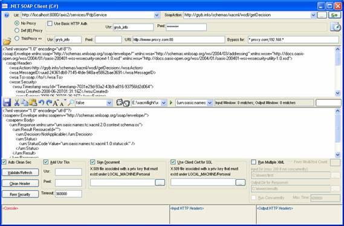

1. Overview
C# SOAP
client was created for security and general web service testing. It can send
one or more requests to a web service and display the response in the client’s
output window.
It
was primarily built to test different security measures that are usually
implemented to protect SOAP traffic:
1.
HTTP basic authentication
2.
SSL with mutual client/server X.509 certificates
3.
Digital signatures as defined in WS-Security profile
4.
Username token profile as defined in WS-Security
profile
5. HTTP proxies
Multiple requests can be sent consequently or concurrently to test a web service throughput. When multiple requests are sent, responses will be stored as separate files in an output directory. The multiple requests can be created manually or generated automatically from a WSDL or XSD file.
The program stores the state of all UI controls on a client’s machine, which makes it easier for a tester to return to the previous debugging session.
It does not require a WSDL/XSD files that describe a web service and it does not use any proxy classes that are usually generated by WSDL.EXE or WSEWSDL*.EXE utilities. An input XML could be loaded from a file or created from a scratch in the input window. Alternatively you can generate a random XML from an XSD or WSDL file.
2. Prerequisites
The client has been initially built with .NET SDK 3.5 and WSE 2.0. The latest version was built on SDK 3.5 using Visual Studio Express 2008, but it could be probably built on SDK 3.0 as well using other versions of Visual Studio.
3. Installation
The easiest way of installing is to use binary distribution and setup.exe utility that will install all dependencies automatically.
Building
from sources will require installing dependencies manually and might require
converting a project and a solution if a different version of Visual Studio is
used.
4. Screenshot

5. Generating XML from WSDL/XSD
One of the most important features that have been implemented lately is generating a random XML from a WSDL or XSD file. It simplifies the testing of a web service and enables a quick start for the developers/testers who are not familiar with WSDL/XSD notations.
All they need to do is to provide an online or offline WSDL/XSD location, select a name of root XML element and press “generate XML” button. A random XML compliant with provided XSD or WSDL will be created and placed to client’s input window.
The first combo box contains a path to WSDL (a URL can be used as well), the second – a fully qualified name of the root element that will be generated.
Multiple requests generated from a WSDL or XSD file can be sent automatically to a web service either consequently or concurrently:
Multiple requests can be created manually as well. When multiple requests are run the response files will stored in an output directory.
6. Downloads and URI
|
Project Summary |
http://sourceforge.net/projects/soap-sec/ |
|
Downloads Home Page |
http://sourceforge.net/project/showfiles.php?group_id=209931 |
|
Subversion repository |
https://soap-sec.svn.sourceforge.net/svnroot/soap-sec/trunk/NetSoapClientCs |
|
This Page |
http://soap-sec.sourceforge.net |
7. Author, Copyright
|
Created by |
Oleg Gryb on 08/10/2006 |
|
Last Updated |
2008.06.19 |
|
Version |
2.1.0.0 |
|
Email |
oleg@gryb.info |
|
Website |
http://gryb.info/resume |
|
Copyright |
Oleg
Gryb, 2006-2008. The program can be used or redistributed freely under
condition that this copyright notice is retained. |
|
|
|